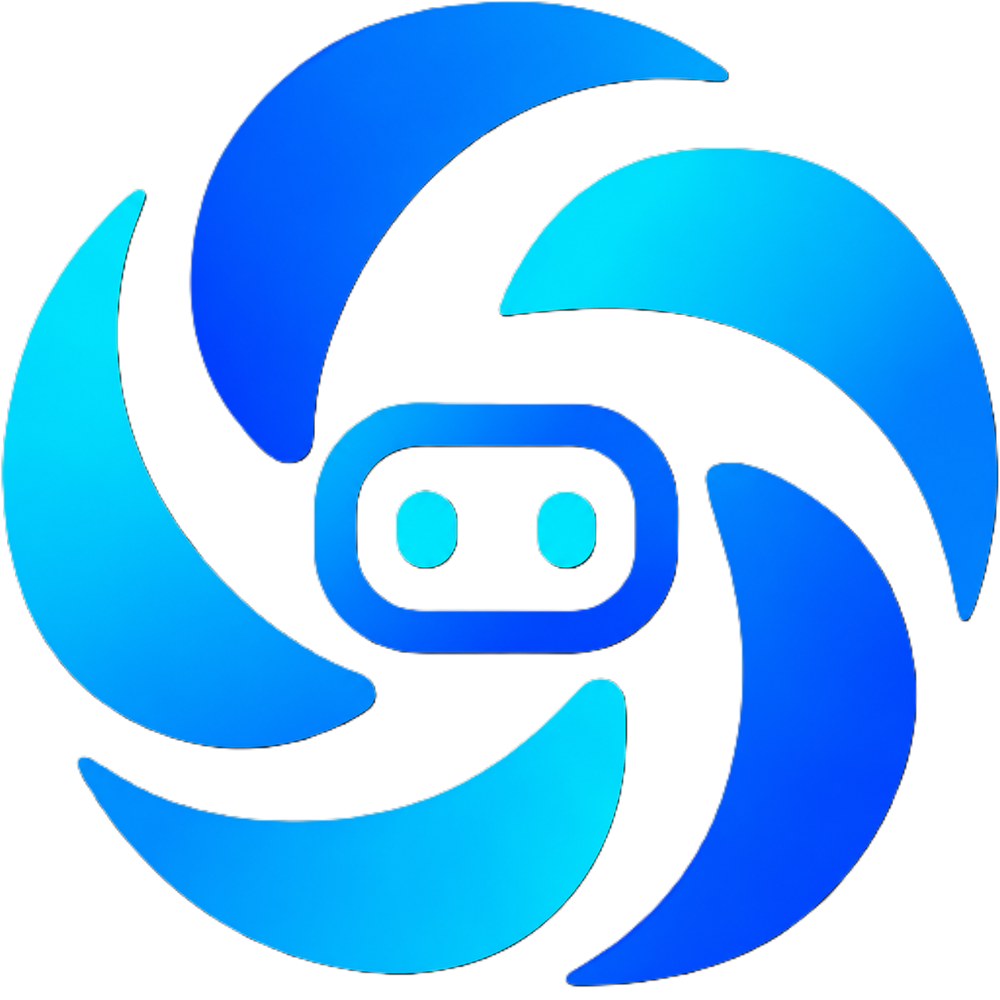
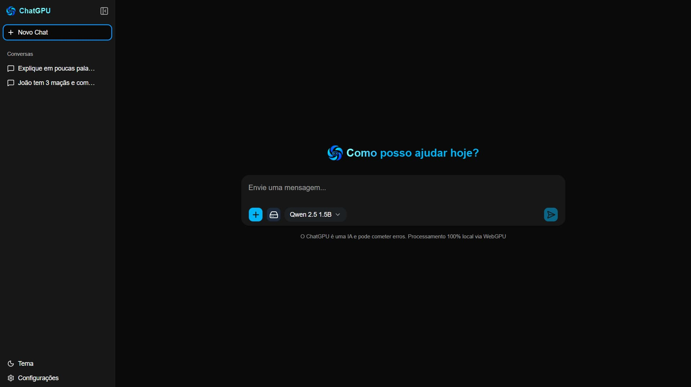
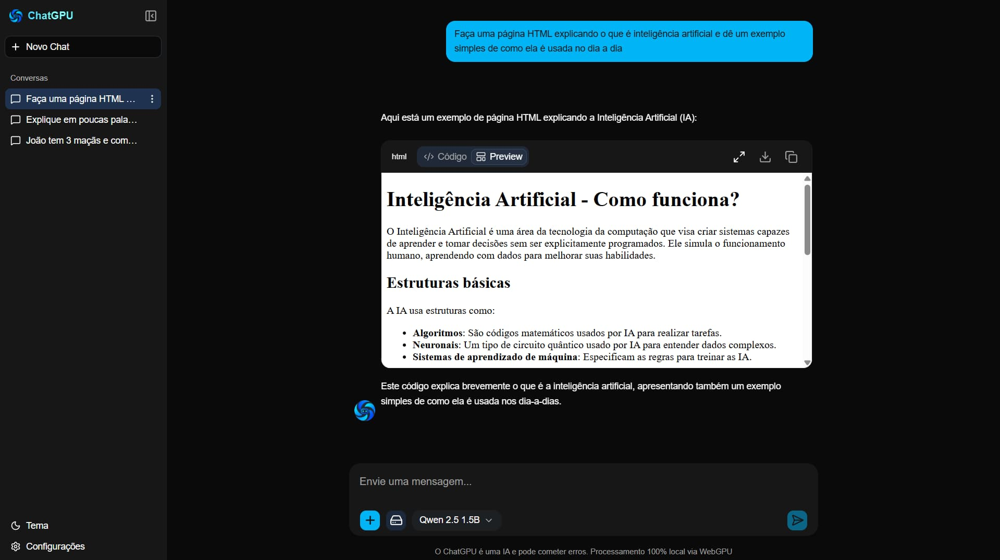
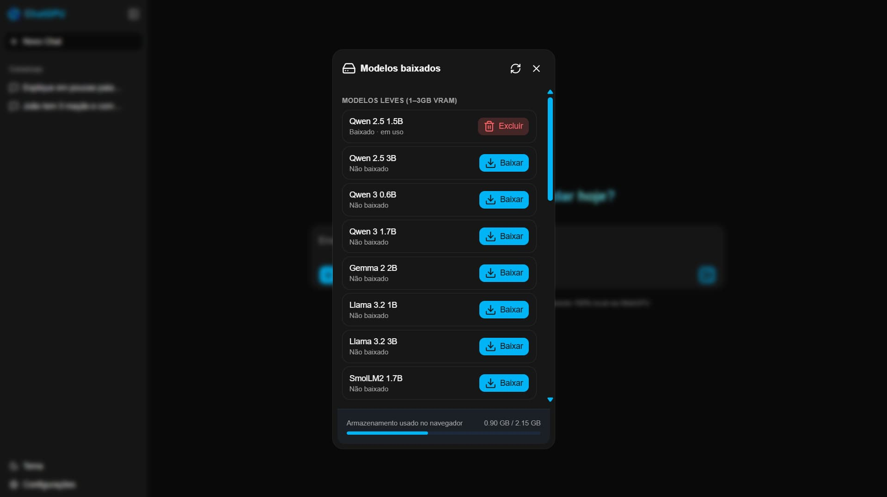
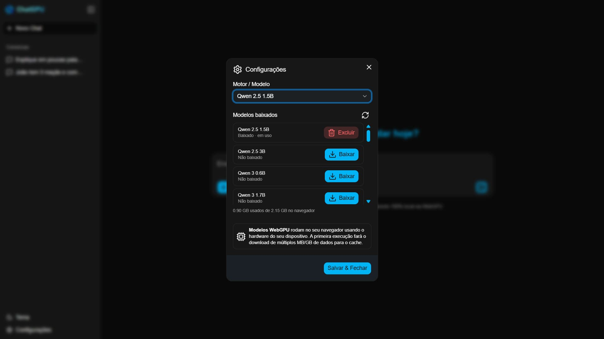

chatgpu

ChatGPU
Seu próprio ChatGPT, rodando inteiramente no navegador
Sem backend. Sem API paga. Sem seus dados saindo da sua máquina.


Sumário
- Visão geral
- Demonstração
- Documentação
- Funcionalidades
- Capturas de tela
- Como funciona
- Métricas de desempenho
- Stack tecnológica
- Modelos suportados
- Instalação
- Estrutura do projeto
- Persistência
- Limitações
- Roadmap
- Contribuição
- Perguntas frequentes
- Licença
Visão geral
A maioria dos assistentes de IA baseados em chat envia cada mensagem para um servidor de terceiros para processamento. O ChatGPU inverte essa lógica: o modelo de linguagem é baixado uma única vez e toda a inferência é executada dentro do próprio navegador, com aceleração por hardware via WebGPU. Nenhuma informação digitada pelo usuário deixa o dispositivo.
| Critério | ChatGPU | Chat em nuvem tradicional |
|---|---|---|
| Privacidade | Processamento local; nada é transmitido | Mensagens trafegam por servidores externos |
| Custo | Gratuito, sem chave de API | Geralmente requer assinatura ou créditos |
| Conectividade | Necessária apenas para baixar o modelo | Necessária a cada mensagem enviada |
| Processamento | Executado na GPU do próprio dispositivo | Depende da infraestrutura do provedor |
Demonstração
Experimente sem necessidade de instalação:
https://chatgpu-nu.vercel.app/
Na primeira visita, o navegador precisa baixar o modelo selecionado. Esse processo pode levar alguns minutos, dependendo da conexão.
Funcionalidades
- Execução local de LLMs diretamente no navegador, com aceleração por WebGPU
- Suporte a múltiplos modelos, incluindo Qwen, Llama, Phi e Gemma
- Interface moderna, no padrão de assistentes conversacionais
- Histórico de conversas salvo automaticamente no navegador
- Streaming de respostas em tempo real, token a token
- Métricas de desempenho por resposta: tokens por segundo, tempo até o primeiro token, uso de tokens e tempo total
- Interrupção da geração a qualquer momento
- Edição de mensagens com regeneração de resposta
- Temas claro e escuro
- Layout responsivo, com suporte a desktop e dispositivos móveis
Capturas de tela
| Início | Chat |
|---|---|
 |
 |
| Modelos | Configurações |
 |
 |
Como funciona
flowchart LR
U["Usuário
Navegador"]
UI["Interface
Next.js · React"]
W["Web Worker
WebLLM · MLC"]
GPU["GPU
WebGPU"]
HUB["Hub de modelos
apenas no 1º download"]
subgraph LOCAL["ARMAZENAMENTO LOCAL"]
direction TB
DB["IndexedDB
Dexie · conversas"]
CACHE["Cache do modelo
pesos · WASM"]
end
U -->|"mensagem"| UI
UI ==>|"postMessage"| W
W ==>|"inferência"| GPU
GPU -.->|"tokens"| W
W -.->|"streaming"| UI
UI -.->|"resposta"| U
UI -->|"salva sessão"| DB
W -->|"carrega modelo"| CACHE
HUB -.->|"download 1x"| CACHE
O projeto utiliza a biblioteca @mlc-ai/web-llm, responsável por executar modelos de linguagem diretamente no navegador a partir da combinação de três componentes:
- Web Workers (
lib/worker.ts) - a thread principal nunca é bloqueada: ela apenas envia a mensagem ao worker e recebe a resposta em streaming. - Cache do modelo (
hooks/useModelCache.ts) - no primeiro uso, o navegador baixa os pesos do modelo, o que pode levar alguns minutos; nas execuções seguintes, o carregamento é praticamente instantâneo. - WebGPU e WebAssembly (
hooks/useEngine.ts) - a inferência é acelerada por GPU quando disponível, com o WebAssembly responsável pelo runtime.
Em resumo, o fluxo de execução é: mensagem enviada → processamento pelo worker → download ou carregamento a partir do cache → inicialização da engine WebLLM → inferência local via WebGPU → tokens retornados em streaming para a thread principal, atualizando a interface em tempo real.
Métricas de desempenho
Cada resposta do assistente é acompanhada de métricas de geração, calculadas em tempo real no próprio navegador durante o streaming. A lógica está em lib/stream-assistant-reply.ts, na função streamAssistantReply, e os valores ficam guardados no campo metrics de cada mensagem (tipo MessageMetrics, em types/chat.ts).
Métricas coletadas
| Métrica | Campo | Unidade | Descrição |
|---|---|---|---|
| Velocidade de geração | tokensPerSecond |
tokens/s | Velocidade de decode: quantos tokens o modelo produz por segundo |
| Tempo até o primeiro token | timeToFirstToken |
s | Latência entre o início do streaming e a chegada do primeiro token da resposta |
| Velocidade de prefill | prefillTokensPerSecond |
tokens/s | Velocidade de processamento do prompt (contexto) antes de a geração começar |
| Tokens da resposta | completionTokens |
tokens | Quantidade de tokens gerados na resposta |
| Tokens do prompt | promptTokens |
tokens | Quantidade de tokens enviados como contexto ao modelo |
| Total de tokens | totalTokens |
tokens | Soma de tokens do prompt e da resposta |
| Tempo total | elapsedTime |
s | Duração total da geração, do início do streaming até o último token |
Como são calculadas
A coleta acontece em duas fases ao longo do streaming.
1. Estimativa ao vivo (a cada token recebido)
Enquanto os tokens chegam, as métricas são estimadas localmente para que a interface exiba a velocidade em tempo real:
timeToFirstToken= instante de chegada do primeiro token - instante de início do streamingtokensPerSecond=(tokens recebidos - 1) / tempo decorrido desde o primeiro token. O primeiro token é descontado porque ele marca o início da contagem de tempo, e a estimativa só é calculada após cerca de 50 ms, evitando picos artificiais nos primeiros instantescompletionTokens= contagem de trechos de texto recebidos (aproximação de 1 trecho ≈ 1 token)
A cada atualização, o callback opcional onSpeedUpdate é chamado com a velocidade atual, permitindo exibir o indicador de tokens por segundo enquanto a resposta é gerada.
2. Valores finais (relatório de uso da engine)
A requisição é feita com stream_options: { include_usage: true }. Ao fim do streaming, o WebLLM envia um último bloco com o relatório de uso, que substitui as estimativas por valores medidos pela própria engine:
tokensPerSecond←decode_tokens_per_s(mantém a estimativa ao vivo caso o valor não esteja disponível)prefillTokensPerSecond←prefill_tokens_per_scompletionTokens,promptTokensetotalTokens← contagem oficial de tokens do modelo
Por fim, elapsedTime é calculado ao término da geração (caso ainda não tenha sido definido) e os valores são arredondados pela função auxiliar round, de lib/utils.ts.
Fluxo de atualização
flowchart LR
A[Início do streaming] --> B[Primeiro token chega]
B --> C[Estimativa ao vivo
tokens/s, TTFT, tokens]
C -->|a cada token| D[Interface atualizada]
C --> E[Bloco final de uso da engine]
E --> F[Métricas finais
decode, prefill, prompt, total]
F --> G[Tempo total calculado]
G --> H[Mensagem salva no IndexedDB]
Durante o streaming, as métricas ficam apenas no estado da interface. A persistência no IndexedDB (via Dexie, por meio de updateChatMessages) ocorre uma única vez, ao final da geração, com os valores definitivos - assim, as métricas de cada resposta continuam disponíveis ao reabrir uma conversa antiga.
Como interpretar
- Tokens por segundo (decode) é o principal indicador de fluidez: quanto maior, mais rápido a resposta aparece na tela.
- Tempo até o primeiro token cresce com o tamanho do contexto, já que o modelo precisa processar todo o histórico antes de começar a responder. Conversas longas tendem a ter um valor maior.
- Prefill costuma ser bem mais rápido que o decode, pois o prompt é processado em paralelo na GPU.
- Os valores variam bastante conforme o modelo, a GPU e a memória disponível; compare sempre resultados obtidos no mesmo dispositivo.
O tempo até o primeiro token e o tempo total são medidos a partir do início do consumo do stream no navegador e podem diferir ligeiramente de medições externas, como as de ferramentas de profiling.
Stack tecnológica
| Tecnologia | Finalidade |
|---|---|
| Next.js (App Router) | Estrutura e frontend da aplicação |
| React | Interface e gerenciamento de estado |
| TypeScript | Tipagem estática |
| Tailwind CSS | Estilização |
| shadcn/ui | Biblioteca de componentes de interface |
| WebLLM (MLC) | Execução de modelos LLM no navegador |
| Web Workers | Processamento em segundo plano |
| Dexie.js | Persistência local via IndexedDB |
Modelos suportados
Os modelos disponíveis são definidos em /constants/models.ts. Entre os exemplos suportados estão:
| Modelo | Origem | Indicado para |
|---|---|---|
| Qwen2.5 | Alibaba | Bom equilíbrio entre qualidade e desempenho |
| Llama 3 | Meta | Respostas de propósito geral com boa qualidade |
| Phi-3 | Microsoft | Modelo leve, indicado para hardware mais modesto |
| Gemma | Alternativa compacta e rápida |
Modelos maiores exigem mais RAM e VRAM e podem apresentar desempenho reduzido em determinados dispositivos. Em notebooks sem GPU dedicada, recomenda-se priorizar modelos menores.
Instalação
Pré-requisitos
- Node.js 18 ou superior
- Navegador com suporte a WebGPU (Chrome, Edge ou outro navegador baseado em Chromium recente)
Passos
# Clonar o repositório
git clone https://github.com/Victor-Gabriel-Barbosa/chatgpu.git
# Acessar o diretório do projeto
cd chatgpu
# Instalar as dependências
npm install
# Executar o projeto em modo de desenvolvimento
npm run dev
Em seguida, acesse:
http://localhost:3000
Estrutura do projeto
Persistência
Todos os dados são armazenados localmente, no próprio navegador do usuário:
| Chave | Descrição |
|---|---|
chatgpu-sessions |
Histórico de conversas (incluindo as métricas de cada resposta) |
chatgpu-model |
Modelo selecionado |
chatgpu-theme |
Tema (claro/escuro) |
Limitações
- Depende de suporte a WebGPU, ainda não disponível em todos os navegadores
- Pode apresentar consumo elevado de memória, dependendo do modelo utilizado
- O carregamento inicial do modelo pode levar alguns minutos
- O desempenho varia significativamente conforme o hardware do usuário
Roadmap
- [x] Exportação e importação de conversas
- [x] Suporte a modelos adicionais
- [x] Métricas de desempenho por resposta
- [x] Melhor gerenciamento de memória
- [x] Otimização de deploy (carregamento tardio de modelos)
- [ ] Suporte a plugins e ferramentas externas
Contribuição
Contribuições são bem-vindas, desde ajustes de interface até suporte a novos modelos.
- Faça um fork do projeto
- Crie uma branch (
feature/minha-feature) - Realize o commit das alterações
- Abra um Pull Request
Perguntas frequentes
É necessário estar online para usar o ChatGPU? Apenas na primeira execução, para o download do modelo selecionado. Após esse processo, o modelo permanece em cache no navegador.
As conversas são enviadas para algum servidor? Não. Toda a inferência é executada localmente, no próprio navegador do usuário.
Funciona em qualquer computador? O funcionamento depende do suporte a WebGPU do navegador e do hardware disponível. Dispositivos sem GPU dedicada tendem a apresentar desempenho mais lento, especialmente com modelos maiores.
É possível utilizar em dispositivos móveis? Em princípio, sim, desde que o navegador do dispositivo tenha suporte a WebGPU. No entanto, a experiência pode variar consideravelmente.
O que significam as métricas exibidas em cada resposta? São indicadores de desempenho calculados localmente: velocidade de geração (tokens por segundo), tempo até o primeiro token, velocidade de prefill e contagem de tokens. Veja os detalhes em Métricas de desempenho.
Licença
Distribuído sob a licença MIT. Consulte o arquivo LICENSE para mais detalhes.